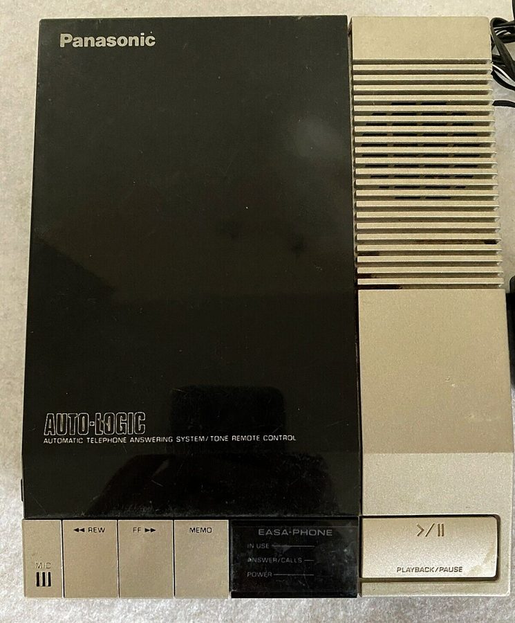
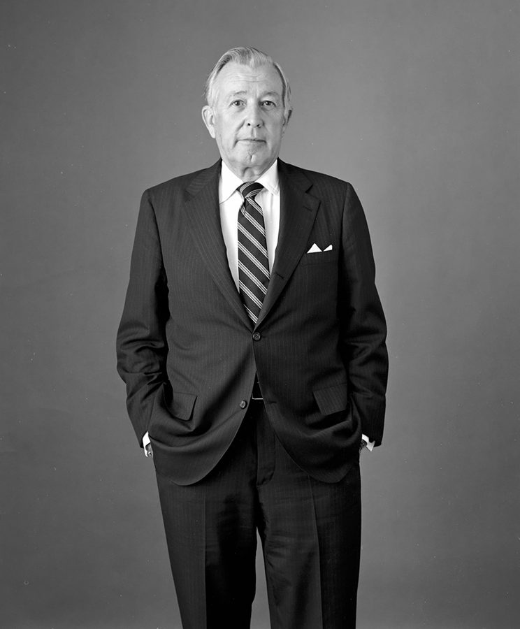
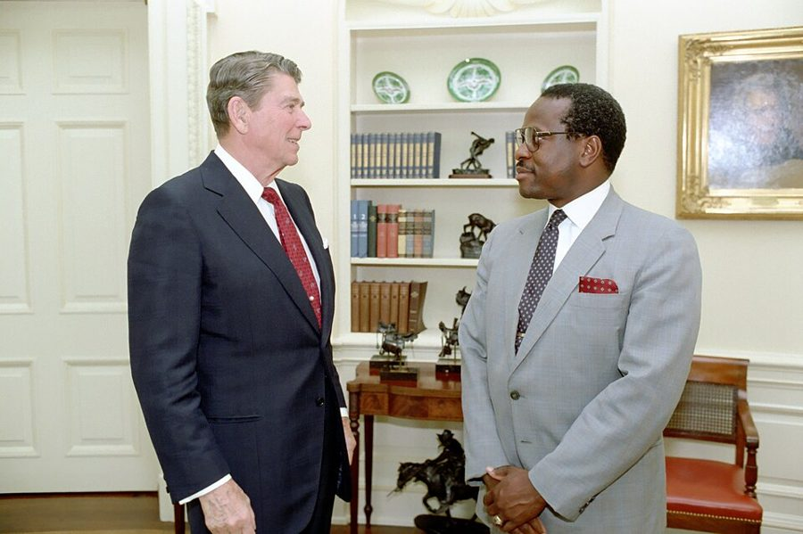
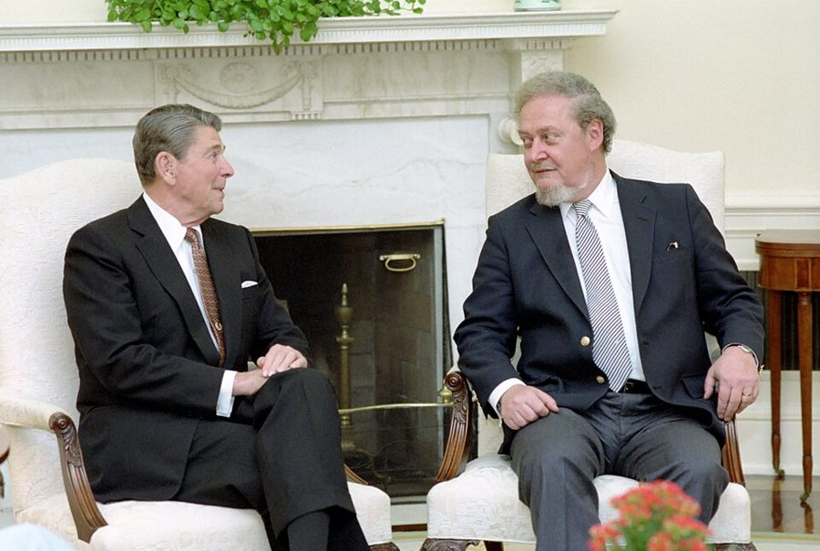

这一章在做什么
接上一页：媒体把他写成里根政府的红人，他躲回了胡佛研究所。这一页从 1981 年写到 1997 年，他五十出头到六十七岁。
事情有三股：和媒体、和华盛顿打交道（宣传新书、Bork 听证、一个周六早上的电话）；为写书满世界跑；最后两节回到私事，老领班 Ed 和晚说话的儿子。各节之间年份跳得很大，每节先认年份。
里根政府 1981–1989
出国调查，写「种族与文化」三部曲
1981 · 51 岁
1985
1989
1993
1997 · 67 岁
Ethnic America
请 Ed 一家吃饭
Late-Talking Children
白宫来电：劳工部长
儿子毕业，写专栏
环球旅行；Bork 听证
圆点是书里给了年份的事。1985 年那一件书里没写年份，是按史实推的。
本站示意图。这一页的八节大体按时间走，但第 10 节是对里根八年的总评，第 13 节（1985 年）排在第 12 节（1987 年）后面。
出场的人
这一页政界的名字多，有两个书里的拼法和通行拼法不一样，还有一对名字听起来几乎一样。
Mary 妻子，律师 第 10 章认识的那位 Palo Alto 律师。这一页里她陪他环球旅行，第 13 节末尾那句玩笑是她的。别和姐姐 Mary Frances 混。
Ed Gally /ˈɡæli/，男 第 3 章的机加工车间领班，作者十九岁时的老板。第 9 节在留言里出现，第 14 节再见一面。
Agnes /ˈæɡnɪs/，女 第 13 节点了名的秘书。第 8 节被记者骂哭的那位秘书书里没写名字。
Robert Bork /bɔːrk/ 联邦上诉法院法官，1987 年被提名为最高法院大法官。第 12 节作者去参议院为他作证。
Ted Kennedy 参议员，民主党 肯尼迪总统的弟弟，带头反对 Bork。作证那天由他代主席 Joseph Biden 主持。
Arlen Spector 通行拼法 Specter 宾夕法尼亚州的共和党参议员。听证会上向作者发问，作者对他评价极低。
Donald Regan /ˈriːɡən/ 白宫幕僚长，不是总统。第 10 节挨过作者的专栏批评，第 13 节那通电话是他让人打的。
Clarence Thomas 朋友 里根任内主管平等就业机会委员会（E.E.O.C.），后来的最高法院大法官。作者说是朋友，照样写文章反对他。
John 儿子 第 7 章里三岁还不开口的那个孩子。1993 年大学毕业，学的是统计。
Stephen Camarata /ˌkæməˈrɑːtə/ 范德堡大学（Vanderbilt）研究儿童语言障碍的教授，第 15 节最后接手的人。
Reagan 和 Regan。 总统是 Ronald Reagan，读 /ˈreɪɡən/；幕僚长是 Donald Regan，读 /ˈriːɡən/。有声书里只差一个元音，第 13 节两个名字挨着出现。
另外，书里的国务卿 George Schultz 通行拼法是 Shultz，在 Kindle 里搜要按书里的拼。
背景：作者默认你知道的事
Ethnic America 和 1981 年的那一圈媒体
Ethnic America （1981）一章写一个族群：爱尔兰裔、德裔、犹太人、意大利裔、华人、日裔、黑人、波多黎各人、墨西哥裔。同年还出了 Markets and Minorities 。
Meet the Press 是 NBC 星期天的政治访谈，几位记者轮流问一个人；Donahue 是 Phil Donahue 主持的日间谈话节目。上这两个节目，等于全国都看见了。

用磁带的电话答录机。第 8 节末尾他给办公室装的就是这类东西，第 9 节的故事也是从回放磁带开始的。Pittigrilli，CC BY-SA 4.0，维基共享资源 里根政府里，书里点到的人
Ronald Reagan
总统 1981–1989
Donald Regan
白宫幕僚长 1985–87
George Shultz
国务卿
Donovan → Brock
劳工部长，1985 年换人
总统任命的两个独立机构
圈外
Clarence Thomas
平等就业机会委员会主席
Clarence Pendleton
民权委员会主席
作者
胡佛研究所，没有职务
本站示意图，只画了这一页点名的职位。两位 Clarence 不是一个人。
白宫幕僚长（chief of staff）管总统的日程和人事，谁能见总统、谁进内阁，都要过他的手。Donald Regan 先当了四年财政部长，1985 年初改任幕僚长。
劳工部长 Raymond Donovan 1985 年 3 月因受到刑事起诉辞职，接任的是 Bill Brock。Donovan 两年后被判无罪。

Donald Regan，1983 年 7 月，当时还是财政部长。Michael Evans，公有领域，维基共享资源 
里根和平等就业机会委员会的 Clarence Thomas，椭圆形办公室，1986 年 6 月。第 10 节说的西尔斯（Sears）百货一案，法院也是这一年判该委员会败诉。白宫摄影办公室，公有领域，维基共享资源 Bork 提名之争，1987 年

1987 年 7 月 1 日，宣布提名当天，里根和 Robert Bork 在椭圆形办公室。白宫摄影办公室，公有领域，维基共享资源 最高法院九位大法官终身任职，由总统提名，参议院表决确认；表决前先由参议院司法委员会开听证会，提名人和证人到场接受提问。
1987 年 7 月里根提名 Bork，反对的团体在报纸、电视上打了大量广告。听证会 9 月开，10 月参议院以 42 票对 58 票否决。作者是为 Bork 作证的证人之一。
种族与文化三部曲
第 11 节说的 trilogy 是三本书：Race and Culture （1994）、Migrations and Cultures （1996）、Conquests and Cultures （1998）。
它们把 Ethnic America 的做法从美国推到全世界：同一个族群到了不同国家，过得怎样。所以他要去新加坡、马来西亚这些地方实地看。书里对三本书的内容一句没讲，只写了路上的两件小事。
1991 年的世贸中心
从布鲁克林大桥一侧看世贸中心双塔，1987 到 1990 年之间。第 3 章里他从哈莱姆走八英里去上夜班，那间车间就在布鲁克林大桥附近。Carol M. Highsmith，公有领域，维基共享资源
纽约世贸中心的双塔 1970 年代初落成，各一百一十层，北塔顶上有餐厅，能俯瞰整个曼哈顿下城。第 14 节那顿饭就在那里。
这本书 2000 年出版，第二年 9 月 11 日双塔被毁。作者写这一节时，那还只是纽约最高的一张餐桌。
Late-Talking Children
第 15 节讲的是这本书（1997）怎么来的。它不是经济学，是一个父亲加一份问卷调查：有一类孩子很聪明，却三四岁才开口说话。
书里说当时找不到针对这类孩子的研究，来信的家长讲了很多误诊的经历。作者不是医生，他在这一节里也只说自己「不知道这些加起来意味着什么」。
留个记号：后面还会回来
这一页是在收线。前面几章埋下的四件事，在这里各有一个交代。
三岁还不说话的儿子 第 15 节 第 7 章里他最大的心事，当时没有答案。这一节是二十五年后的下文。问卷里出现的那些职业，第 12 章开头他会拿自己家的人再对一遍。
借给他五块钱的领班 第 9、14 节 第 3 章里 Ed Gally 自掏腰包借钱给他吃饭，还劝他离车间里一位年轻女工远点。两件事在第 14 节的饭桌上都被提起。
Daddy 第 14 节末尾 第 1 章他说过，要很多年才完全明白 Daddy 有多好。这一节最后几句是全书再次说到 Daddy 的地方，见下面「值得停下来的句子」。
1976 年的那次提名 第 9 节 第 10 章里他被提名进联邦贸易委员会，后来自己退出。这里补了一个当时他不知道的细节，他说此后常拿它讲给年轻人听。
词与短语
词条按书里出现的顺序排，小标题是原书用 • • • 隔开的各节。斜体小字是那句话里的几个词，在 Kindle 里搜它就能跳到那一句。单个的生词长按就能查，这里收的主要是词典帮不上忙的。
第 8 节 · 宣传新书，装答录机
sheer
… standpoint of sheer publicity and book …
单纯的，光论……
不是「陡峭」。sheer + 名词：除了这个别的不算。
luminaries
… William F. Buckley, and other luminaries. …
名流
Mike Wallace 是 CBS《60 分钟》的记者，Buckley 是保守派杂志 National Review 的创办人。Manhattan Institute 是纽约的智库。
qualitatively
… Qualitatively, the story was very different. …
论质量，就是另一回事了
和上一段的「光论曝光量和销量」对着说：量上大获成功，质上很糟。
on the air
… to deal with on the air. …
在直播里
air 指电波。on the air = 正在播出。
on the spot
… not be answered on the spot. …
当场
I am not now, nor have I ever been
… “I am not now, nor have I …
我现在不是，过去也从来不是
套的是 1950 年代国会调查共产党时的那句问话 Are you now, or have you ever been, a member of… 。美国人一听就知道他在借那个腔调开玩笑。
impervious to denial
… and was impervious to denial. …
怎么否认都没用
impervious 本义是不透水。
come out
… which came out at the same …
（书）出版
下面第 103 段的 his review came out 是同一个意思：书评登出来。
school
… place him in the school that …
学派，持某种看法的一路人
不是学校。seems to… maybe… 一连串不落实的词，就是下文说的 innuendo。
staggering as it was
… Staggering as it was to suggest …
这么说已经够骇人了，（更骇人的是……）
形容词 + as + 主谓 = 尽管。stagger 本义是打得人踉跄。
slander and libel
… laws on slander and libel to …
诽谤（口头的和见诸文字的）
法律上分两种：slander 是说出口的，libel /ˈlaɪbl/ 是写下来、播出去的。
innuendoes
… what their reporter’s innuendoes suggested. …
含沙射影的话
读 /ˌɪnjuˈendoʊz/。
unqualmed
… “untroubled, unqualmed by the attacks …
毫无不安
记者自造的词。qualm /kwɑːm/ 是心里的不安、疑虑，l 不发音。
that is not the same as
… that is not the same as …
这和……是两回事
这一段的关键是分开 angry 和 hurt：他承认会生气，不承认被刺痛。
op-ed
… of two op-ed columns of mine …
报纸言论版上的署名文章
opposite the editorial page 的缩写：排在社论对面那一版，登外人写的评论。不是 opinion 的缩写。
holier-than-thou
… reformed sinners who become holier-than-thou. …
自以为比别人圣洁
thou 是古英语的 you，出自《圣经》。他的专栏标题 Blacker than Thou 是照这个改的：比谁更「黑」。上一页的 blacker-than-thou 也是这个词。
sorority
… belonged to a sorority that would …
大学女生联谊会
美国大学里要经挑选才能加入的女生社团，男生的叫 fraternity。读 /səˈrɔːrəti/。
set people off
… seemed to set people off worse …
把人惹炸了
像点着引信。第 15 节还有一个 set me off ，意思不一样。
dirty little secret
… telling this dirty little secret took …
大家都知道、谁也不肯说破的丑事
a passing nuisance
… Controversy was a passing nuisance, but …
一阵就过去的烦心事
passing = 短暂的。把满城风雨叫 nuisance，是往轻里说。
put a call through
… to put any phone calls through …
把电话转接进来
hang up on
… When she hung up on one …
挂（某人的）电话
多一个 on，是当着对方的面挂断，带火气。
behave themselves
… if they didn’t behave themselves. …
放规矩点
通常是对小孩说的话。上一句的 became civilized 也是同一种挖苦。
insulate
… causing me to insulate myself and …
把自己隔开
本义是给电线包绝缘层。
第 9 节 · 留言里的老声音
machine shop
… work in his machine shop when …
机加工车间
不是卖机器的店。foreman 是车间里带班的领班。
up to the city
… invited me up to the city …
北上进城（去旧金山）
湾区的人说 the city 就是旧金山。斯坦福在它南边五十公里，所以是 up。
catch up on
… a lot to catch up on. …
把这些年的事补着讲一遍
go on from … to
… Ed had gone on from being …
从……一路做到……
all the way back to
… be investigated all the way back …
一直往回查到
第 10 节 · 和里根政府的距离
happen to coincide with
… happened to coincide with those of …
碰巧和……一致
coincide 这里是看法相合，不是时间上同时。
in step with
… attempt to be in step with …
和……步调一致
队列用语：齐步。
a nasty note
… that brought a nasty note from …
一张措辞很不客气的便条
note 是短信，不是笔记。
blithely
… “Reaganite” was blithely applied to me …
想都不想地，轻飘飘地
读 /ˈblaɪðli/。Reaganite = 里根派。
registered as a Democrat
… when I was registered as a …
选民登记上填的是民主党
美国人登记成为选民时可以填一个党派，不交党费，也没有组织关系。他说 1972 年以后哪个党都不填了。
state dinner
… twice invited to state dinners at …
国宴
state = 国家，不是州。白宫为来访的外国元首办的正式晚宴，受邀是很大的面子。
by and large
… By and large, I found the …
大体上
plague
… continued to plague the Reagan administration. …
一直缠着……不放
名词是瘟疫，这里作动词。读 /pleɪɡ/。前面的 ineptness 是笨拙、不在行。
cover themselves
… more careful to cover themselves. …
把自己遮掩好，不留把柄
这两句是个推理：做得这么笨，反而不像是存心的。同意不同意另说，先看懂他的逻辑。
was said to have
… he was said to have made …
据说曾经……
作者没有自己核实，用这个句式留了余地。
it ain’t what you do
… “it ain’t what you do, it’s …
要紧的不是做什么，是怎么做
1939 年的一首爵士歌 ’Tain’t What You Do 的歌词。ain’t = isn’t，口语。上一句的 George Wallace 是 1960 年代以维护种族隔离出名的亚拉巴马州长。
第 11 节 · 环球旅行
trilogy
… a trilogy on race and culture …
三部曲
读 /ˈtrɪlədʒi/。见上面「种族与文化三部曲」。
commitments
… Mary’s commitments as an attorney would …
手上推不掉的工作
不是「承诺」。已经答应下来、必须到场的事。
run up a bill
… running up big phone bills across …
把账单越打越高
mischievously
… she mischievously gave ambiguous answers when …
存心使坏地，逗着玩地
读 /ˈmɪstʃɪvəsli/，重音在第一个音节。玩笑在于：他先住了几天单人间，这时来了位不肯说清自己是不是太太的女士。
doctoral examining committee
… of his doctoral examining committee who …
博士考试（答辩）委员会
hold him to strict standards
… who held him to strict standards, …
拿严格的标准要求他
hold 某人 to 某标准：不许他低于这条线。
on my part
… as harshness on my part but …
在我这一方
整句：他没把这当成我的苛刻，而是当成关心。
posh country club
… to a posh country club, where …
高档的乡村俱乐部
会员制的高尔夫、餐饮会所，身份的标志。chauffeur 读 /ʃoʊˈfɜːr/，私人司机。
第 12 节 · 为 Bork 作证
anti-trust law
… Bork’s writings on anti-trust law, and …
反垄断法
trust 是 19 世纪末的垄断联合体「托拉斯」。Bork 在这个领域的著作经济学系也用，所以作者早就读过。
assign
… and had assigned some of them …
指定为课上的必读材料
strike me as
… He struck me as one of …
在我看来是
strike 不是打。A strikes me as B ：A 给我的印象是 B。
confirmation hearings
… announced before holding confirmation hearings. …
（参议院的）任命确认听证会
confirmation 这里是参议院对总统提名的批准，hearing 是听证。
know it all
… think that they know it all, …
自以为什么都懂
a know-it-all 是骂人的话。prelude 是序曲：这通常是大祸的前奏。
smear tactics
… the crucial smear tactics used against …
抹黑的手法
smear 本义是涂污。第 8 节的 smears about me 是同一个词。
plaintiff
… against a minority plaintiff in a …
原告
读 /ˈpleɪntɪf/。被告是 defendant。
turn my stomach
… was enough to turn my stomach. …
让我反胃
in vain
… But I looked in vain for …
白找了一通
第 14 节的 not in vain 是反过来：没有白费。
make it a point
… so I made it a point …
特意，打定主意
opening statement
… minutes for an opening statement, and …
开场陈述
听证会的程序：证人先念一段准备好的话，然后议员提问（question period）。
bring that to a close
… “Can you bring that to a …
收个尾，结束掉
close 是名词，读 /kloʊz/。
ostentatiously
… yawning and stretching ostentatiously while I …
故意做给人看地
读 /ˌɑːstenˈteɪʃəsli/。
come through
… did not come through on the …
（声音）传出来，被听到
invincible ignorance
… whose invincible ignorance was exceeded only …
怎么教都教不会的无知
原是天主教神学的术语。A was exceeded only by B 是固定的骂人句式：他的 A 已经登峰造极，只有他的 B 更甚。
get down to his level
… to get down to his level …
把自己降到他那个水平（跟他吵）
become the issue
… want to become the issue instead …
让自己变成话题的中心
issue = 争论的焦点。
got that
… Some viewers got that and others …
看懂了（他是在表示不屑）
get = 领会。
condolences
… and dismayed condolences from others. …
慰问
本来是对死者家属说的吊唁话。有人以为他被问倒了，跑来安慰他。
briefs
… copies of the briefs that Bork …
（律师交给法庭的）书面诉状
不是「简报」，也不是内裤。file a brief = 递交诉状。
第 13 节 · 周六早上的电话
resign to face an indictment
… recently resigned to face an indictment, …
辞职去应对刑事起诉
indictment 读 /ɪnˈdaɪtmənt/，c 不发音，听书时很难认出来。
explain away
… forced to explain away things I …
替（我说过的话）打圆场、往回找补
多了 away：解释到它不成问题为止。
put out brushfires
… to put out political brushfires started …
四处灭火
brushfire 是灌木丛里的野火，一处灭了一处又起。
write it off as
… I wrote it off as just …
只当它是……，不再去想
会计用语：把收不回来的账一笔勾销。
ring off the hook
… has been ringing off the hook …
电话响个不停
hook 是老式电话挂听筒的叉簧。
throw their support behind
… they will throw their support behind …
转过来全力支持
fall into place
… Now it all fell into place. …
一下子全对上了
像拼图的每一块落到位。
cut them off at the pass
… to cut them off at the …
抢先一步，把他们的路截断
西部片里的台词：抄近路赶到山口（pass）堵住对方。
charges dropped
… ALL CHARGES AGAINST RAY DONOVAN DROPPED …
指控撤销
charge = 刑事指控；drop = 撤回。报纸标题省掉了 were。笑点见下面检查题第 5 题。
第 14 节 · 世贸中心的晚餐
destitute
… when I was destitute at 19. …
身无分文
比 poor 重得多。读 /ˈdestɪtuːt/。
the best view in the house
… had the best view in the …
全店视野最好的位置
house 指餐厅、剧院这类营业场所，不是住宅。
on the verge of tears
… were both on the verge of …
眼泪快要下来了
warn me away from
… trying to warn me away from …
劝我离……远点
sophisticated
… “Everyone was more sophisticated than I …
世故，见得多
Ed 在上一句停顿了两次才挑出这个词，是个客气的说法。作者接过来自嘲：那时候谁都比我世故。
more than half a century old
… was more than half a century …
五十多岁了
不说 over fifty，说「年过半个世纪」：都这么大的人了，还会掉眼泪。
第 15 节 · 晚说话的孩子
concentration
… with a concentration in computer programming. …
（专业里的）主攻方向
不是「专心」。美国大学里专业（major）下面再分的方向。
set in motion
… This column set in motion an …
引发了（一连串的事）
the literature
… was available in the literature and …
已发表的研究文献
不是文学。下一句的 citations 是文献出处，也不是「引语」。
come up empty
… that I had come up empty. …
一无所获
leave them high and dry
… simply leave them high and dry, …
把他们晾在那儿不管
本义是船搁浅在滩上，潮水退了。
take me up on
… of them took me up on …
接受了我的提议
mutual support group
… Thus began a mutual support group, …
互助小组
有同样难处的人定期交流、互相打气。那时靠写信。
dawn on me
… slowly began to dawn on me …
我才渐渐明白过来
dawn 是天亮。主语是那件事，不是人。
set me off
… What set me off was a …
促使我动手的
和第 8 节的 set people off （惹火）是同一个短语，这里是「触发」。
in passing
… who mentioned in passing that her …
顺口（提了一句）
add up to
… what all this added up to. …
合起来说明什么
inundated with
… I was being inundated with letters …
被……淹没
读 /ˈɪnʌndeɪtɪd/。
gross misdiagnoses
… stories of gross misdiagnoses and counterproductive …
错得离谱的诊断
gross 这里是「严重的」，不是恶心，也不是「总的」。counterproductive：适得其反。
pass the baton
… happy to pass the baton to …
交棒
baton 是接力棒，读 /bəˈtɑːn/。
值得停下来的句子
It is the truth that hurts.— 第 8 节，记者说他挨了这么多年骂却不见难受。本站译：伤人的是真话。
强调句 It is … that … ，重音落在 truth 上。这句话两头都管：别人编的谎话伤不到他，所以他只生气、不难受；他说的话让别人那么难受，照这个逻辑，就是因为说中了。
后半层意思他没有明说，紧接着的下一段讲的就是 Blacker than Thou 惹出的风波。读这一段要分清 angry 和 hurt 两个词，他只认前一个。
The person I would have most wanted to do something for was Daddy.— 第 14 节末尾。本站译：我最想为他做点什么的人，是 Daddy。
主语很长：The person (whom) I would have most wanted to do something for ，到 was 才是谓语。would have wanted 是虚拟语气，说的是一件已经来不及的事。
前面一整节都在写请 Ed 吃饭有多圆满，到这里一转：能回报的只有 Ed 一个，别的人都没等到。全书写感情的地方很少，这是其中一处。
检查一下理解
先在心里答，再点开。答错的那题，回书里把那一节再读（或再听）一遍。
1. 第 8 节他说自己对媒体的攻击「不受伤」，是说他不生气吗？ 不是。他明说自己不时被那些不实的说法气到。他分开的是生气和被刺痛：编出来的话刺不痛人，只有真话才会。
2. 吉隆坡旅馆里那束花是谁送的？他为什么差点落泪？ 是二十多年前他在康奈尔教过的一个外国学生。当年博士考试委员会里只有他一个人坚持按严格标准要求这个学生，别人都打算放行。他一直不知道对方怎么看这件事，这束花说明对方把它当成了关心。
3. Bork 听证会上，他和那位参议员交锋几句之后就坐着不说话了，是被问住了吗？ 按他自己的说法不是。他认为对方不懂又自信，自己要么降到同一水平去吵，要么把不屑摆在脸上；他不想让自己变成焦点，就选了后者。观众有的看懂了，有的以为他输了，所以事后祝贺和慰问都收到了。
4. 第 13 节，白宫周六一早来电话问他想不想当劳工部长。幕僚长 Donald Regan 是真想让他当吗？ 不是。Regan 想要的人是 Bill Brock。反对 Brock 的人打算推作者出来，至少让他别马上拒绝，好拖几天另找人选。Regan 抢在他们前面让人打电话，拿到的正是他要的那句「不去」。注意这是幕僚长 Regan，不是总统 Reagan。
5. Mary 想出的那条报纸标题，说 Donovan 的指控全部撤销，好笑在哪里？ Donovan 是因为被起诉才辞去劳工部长的。大家在想象「要是作者说了想当」华盛顿会怎么反应，Mary 的答案是：那边宁可立刻让前任脱罪回来，也不要他。这是拿作者的招人嫌开玩笑。
6. 第 15 节，是什么让他决定给家长们发问卷？问卷之前他做了什么？ 之前他只做了一件事：查了四个月文献一无所获，就让来信的家长通过他互换地址，成了一个互助小组。将近一年后，一位母亲顺口提到丈夫是飞行员，而他刚听说组里另有几家也有飞行员，觉得二十来户人家里这个数目太多，才发了问卷。